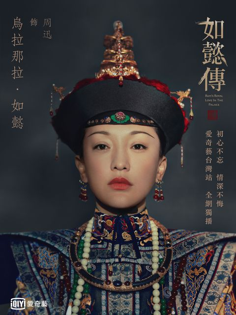
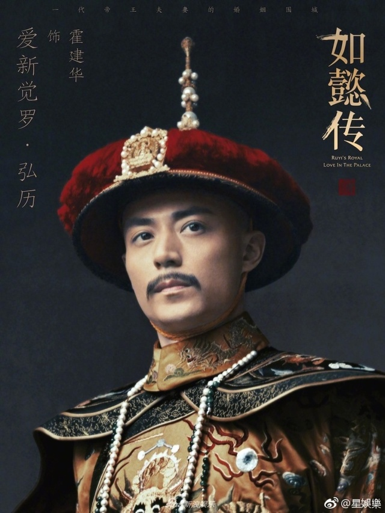

劇情大綱
《如懿傳》是一部根據流瀲紫小說《後宮如懿傳》所改編的中國古裝電視劇，由導演汪俊所執導，於2018年播出。
亦是2011年火紅電視劇《甄嬛傳》的續集。
此劇由周迅[1]、霍建華[2]等人領銜主演，並由張鈞甯[3]、董潔、李純、經超、辛芷蕾、童瑤、胡可等人聯合主演。
角色介紹
周迅 飾 烏拉那拉·如懿

中國大陸著名女演員、歌手，中國大陸四大花旦之一。
周迅除了曾獲巴黎國際電影節、亞洲電影大獎、華語電影傳媒大獎、百花獎等影后獎項，亦是史上第一位獲得兩岸三地最高的華人電影獎，即台灣金馬獎、香港電影金像獎、中國電影金雞獎三金后冠的大滿貫演員。
霍建華 飾 愛新覺羅·弘曆

現主要活躍於中國大陸拍攝電視劇及電影。
2015年，以電視劇《花千骨》中白子畫一角創事業高峰。
張鈞甯 飾 珂里葉特·海蘭
2002年以電視劇《流星花園2》開始演藝生涯，2006年一部《白色巨塔》才漸漸開始受到矚目；
2007年憑藉電影《情非得已之生存之道》入圍第44屆金馬獎最佳女配角，期間都同時兼顧著學業。
2010年畢業於國立中央大學產業經濟研究所法律組碩士班。
快問快答
- 請問如懿傳中主演
皇帝
的是哪位演員？
- ( )霍建華
- ( )霍元甲
- ( )劉德華
- ( )龍劭華
- 請問劇中的
如懿
從來沒擔任過哪個角色？
- ( )庶人
- ( )皇貴妃
- ( )皇后
- ( )答應
- 請問劇中
沒有
出現以下哪個角色？
- ( )甄環
- ( )容嬤嬤
- ( )小燕子
- ( )魏燕婉